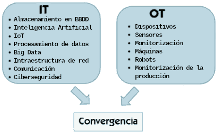

No és el mateix utilitzar una càmera digital per a fotografiar un rostre que un ordinador realitze un reconeixement facial. En tots dos casos es tracta de tecnologia i tots dos casos són exemples de digitalització d'un procés, però la seua complexitat i impacte és molt diferent.
En este sentit, es diferencien dos grans grups de tecnologies:
- Tecnologies de la Informació (IT): dedicades al processament de dades. També anomenades digitalització en negosi, es tracta d'eines digitals enfocades en el processament de dades i en la gestió de la informació. Són com el cervell de l'empresa: ajuden a organitzar les coses, a comunicar-se amb altres persones i a prendre decisions intel·ligents. Les característiques principals d'un entorn IT són:
- Orientat principalment en la gestió, emmagatzematge, processament i transmissió d'informació.
- S'encarrega de sistemes empresarials, com els sistemes ERP, bases de dades, servidors i xarxes d'ordinadors.
- Inclou el desenvolupament de programari, implementació i manteniment d'aplicacions.
- Gestiona la infraestructura de comunicacions.
- Ciberseguretat. Gestiona la seguretat dels elements esmentats anteriorment, implementant mesures per a assegurar la integritat, confidencialitat i disponibilitat de les dades.
- Tecnologies de l'operació (OT): enfocades en l'automatització. També anomenades digitalització en planta, es tracta d'eines digitals que s'enfoquen en el control i l'automatització dels processos físics en entorns domèstics, industrials i comercials. Serien com els braços i les cames de la companyia: màquines, braços robòtics, sensors... en definitiva, tecnologies específiques per a la fabricació industrial, el transport, la producció d'energia, etc. Les característiques principals d'un entorn OT són:
- Se centra en els sistemes físics i com interactuen entre ells (màquines, sensors, dispositius de control).
- Sol operar en temps real per a controlar i supervisar processos crítics que requereixen respostes immediates.
- Garanteix la seguretat física de les operacions i protecció de les treballadores i els treballadors.
Tradicionalment, les tecnologies IT i OT han funcionat de manera independent, mentre que en els sistemes moderns el programari és el responsable de coordinar el món OT. Molts d'aquests sistemes utilitzen la IA per a rebre i analitzar les dades que reben de les cadenes de producció, generant ordres per a que les màquines funcionen de manera més eficient, fiable i segura. No obstant això, esta convergència també presenta inconvenients. Quan hi ha infraestructures crítiques (per exemple una central hidroelèctrica) que estan distribuïdes, l'exposició a un atac pot ser major. Esta vulnerabilitat pot facilitar l'espionatge o el sabotatge.
Diferències entre IT i OT: https://www.youtube.com/watch?v=y52JeCHvTYY
Evolució de les IT-OT
Les tecnologies IT i OT han evolucionat des d'una total autonomia, fins a la interdependència actual. L'evolució pot dividir-se en 5 etapes:
- IT i OT diferenciades (1970-1990): els sistemes IT i OT funcionaven per separat en la majoria de les organitzacions. Cada tecnologia se centrava en el seu camp amb escassa comunicació entre tots dos sistemes.
- Convergència (1990-2000): a mesura que la tecnologia avança, es produeix una convergència gradual d'IT i OT. Es comencen a establir estàndards de comunicació per a connectar sistemes de control industrial amb els sistemes d'IT.
- Ciberseguretat (2000-2010): amb els avenços en sensors, xarxes industrials la computació en el núvol i Internet de les coses (IoT), les organitzacions van començar a gestionar grans volums de dades d'IT i d'OT. Açò va augmentar la superfície d'atac cibernètic i la necessitat d'implementar mesures de seguretat per a protegir els seus sistemes de control industrial i assegurar la integritat de les dades.
- IA i edge computing (2010-2020): les empreses comencen a utilitzar la IA per a optimitzar operacions, així com la computació en la vora (edge computing) per a processar les dades a prop de la font en lloc d'enviar-les al núvol. Açò és essencial per a poder reaccionar en temps real en entorns industrials.
- Integració completa i bessons digitals (actualitat): la tendència actual és la integració completa d'IT i OT, de manera que es crea un "bessó digital" de l'operació física per a simular i optimitzar processos. Açò permet una presa de decisions més precisa i una major eficiència en la gestió d'arxius i recursos.
Bessons digitals: https://youtu.be/6Xg8r5BUGjA?si=3RPKMlX0p-4ee-_x